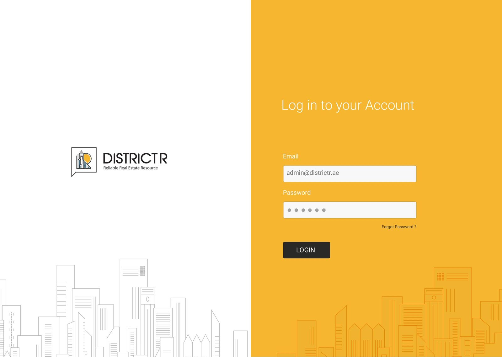
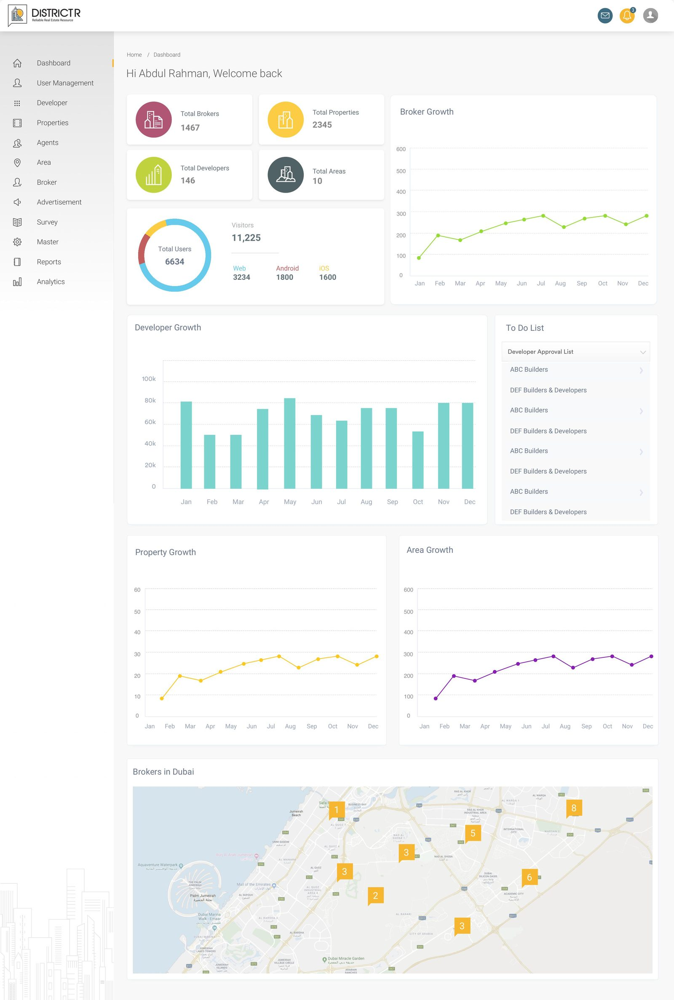
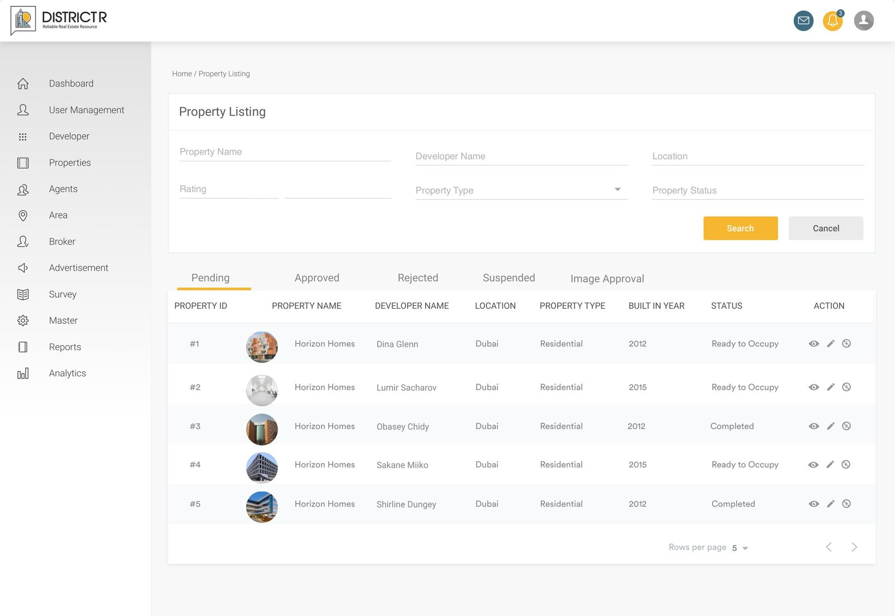
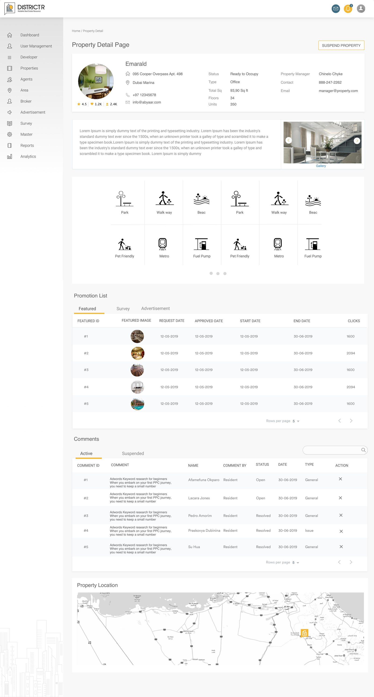
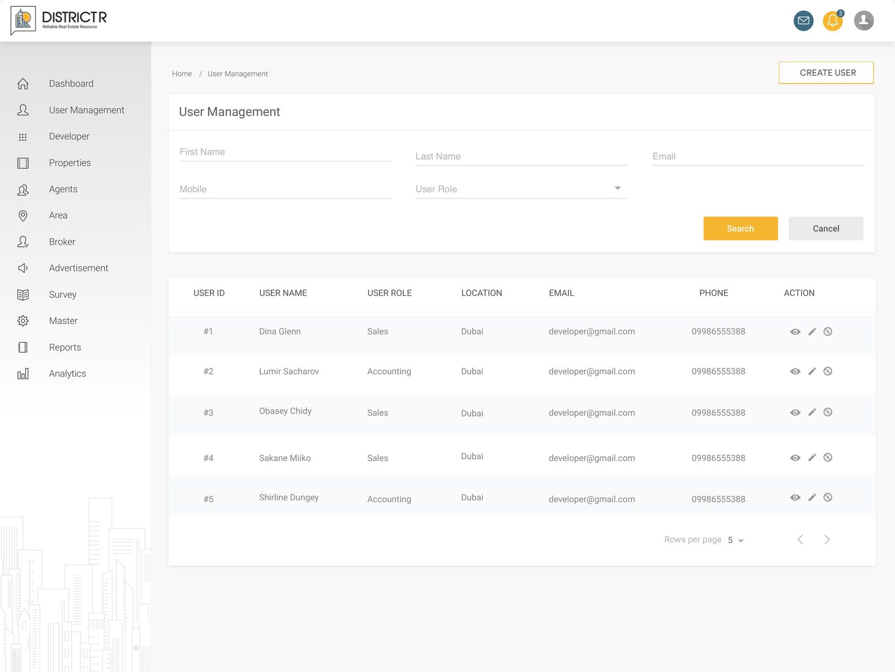
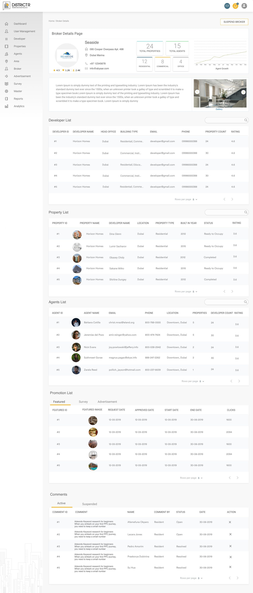
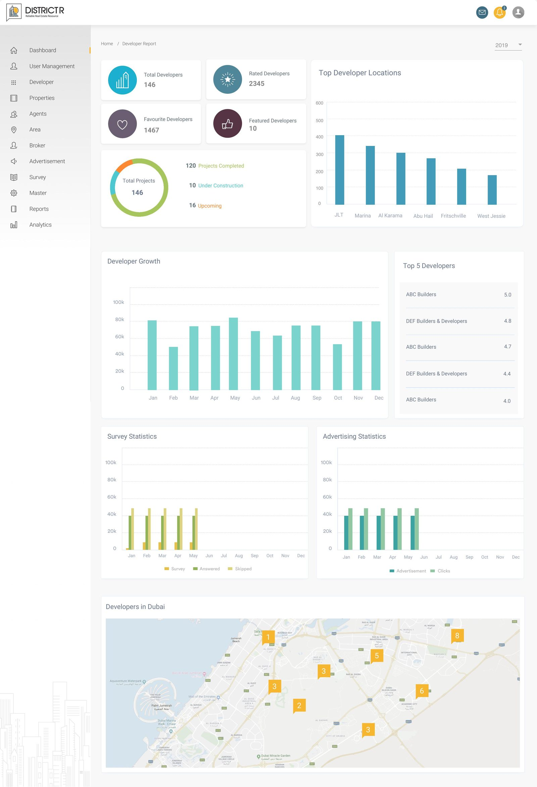
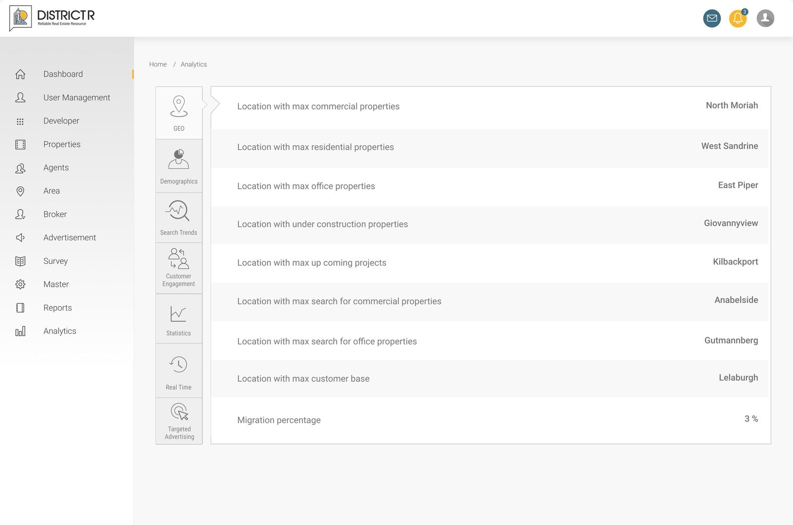

District R — Real Estate Super-Admin Platform
A single web console for running a real estate marketplace — approving listings, managing developers, brokers and agents, and tracking performance across the business.
Overview
Four very different stakeholders — internal staff, developers, brokers and agents — needed one control tower to run the entire marketplace.
District R is a real estate resource platform connecting developers, brokerages and agents around Dubai listings. Behind the public-facing product sits the admin console — the operational backbone the internal team uses to manage every side of the marketplace: onboarding and vetting developers and brokers, reviewing and approving property listings, running surveys and advertising, and reporting on how the business is performing.
My focus was designing that console end-to-end — the information architecture, the core workflows (create, list, review, approve/suspend), and the reporting layer that turns raw activity into something the team can act on.
One console, four kinds of users
Every module — listings, promotions, surveys, reports — had to work for whichever of these the admin was looking at, without the interface changing shape underneath them.
Super Admin
Oversees the whole platform: approves developers and brokers, moderates listings and comments, and keeps an eye on growth through the dashboard.
Developers
Property developers listed on the platform, tracked through profile pages showing their projects, ratings, and completion status.
Brokers & Agents
Brokerage firms and individual agents, each with a profile rolling up their listings, ratings and engagement so admins can vet and support them.
Customers
End users of the public product, visible to admins as engagement data, survey responses, and comments that need moderation.
Login & dashboard
The dashboard had to answer one question at a glance: how is the marketplace doing today? Broker, property, developer and area growth sit alongside a live to-do list and a map of broker activity, so the admin's first screen is also their most useful one.


Reviewing & approving listings
Property listings move through pending, approved, rejected and suspended states, plus a separate queue for image approval. The same filter-and-table pattern repeats across developers, brokers, agents and properties, so the team only has to learn the workflow once.

A single record for everything about a listing
The property detail page pulls together the listing's facts, gallery, nearby amenities, its promotion history across featured placements, surveys and ads, resident comments, and its location — so an admin never has to leave the page to make a call on it.

Managing the people behind the platform
Internal user management handles staff roles and permissions, while broker and developer profiles act as 360° views — rolling up their listings, agents, ratings and comments in one scrollable record.


Turning activity into decisions
A dedicated reporting layer breaks performance down by developer, property, broker, agent and area, each with its own growth chart and leaderboard. A separate analytics module goes deeper — geography, demographics, search trends and customer engagement — for the team to spot patterns the day-to-day tables won't show.


What shaped the interface
- One table-and-filter pattern reused across every listing module, so muscle memory carries over
- Consistent view / edit / suspend actions on every record, always in the same place
- Role-based left navigation that scales from 12 modules without overwhelming the admin
- Status states (pending, approved, rejected, suspended) communicated through colour and copy, not colour alone
- Dense data screens broken into cards and charts so reports stay scannable, not spreadsheet-like
Thanks for reading
More case studies on the work page →